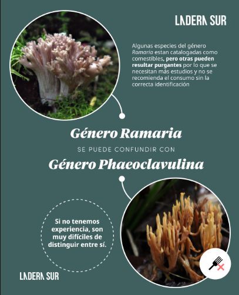

¿Cuál es la diferencia entre los hongos comestibles y los venenosos?

Amanita Muscaria
Aunque no existe una regla universal que permita diferenciar todos los hongos comestibles de los venenosos, hay cosas
que podemos tener en cuenta.
Cada especie tiene sus propias características y también sus “confusores” peligrosos. Por eso, la clave para una recolección
segura es conocer en detalle la especie que se quiere recolectar, su forma, su hábitat y las especies similares que pueden
resultar tóxicas.
Entonces, ¿que tenemos en cuenta?
Para distinguirlos correctamente, se recomienda observar con atención la morfología del hongo: el color, la forma del sombrero, el tipo de láminas o poros, la presencia de anillo o volva, y la textura del pie. Estos elementos ayudan a reconocer diferencias entre especies que a simple vista pueden parecer iguales. También es importante identificar el entorno donde crece el hongo —el tipo de suelo, los árboles cercanos y la zona del bosque o pradera—, ya que cada especie tiene un hábitat característico. Si existe la menor duda al momento de identificar un hongo, es mejor no consumirlo.
La confusión entre hongos comestibles y venenosos puede causar intoxicaciones graves o incluso la muerte. Por eso, la recomendación principal es abstenerse cuando no se tiene la certeza absoluta. También se aconseja que, cuando se prueba una especie silvestre por primera vez, se consuma una cantidad muy pequeña y se conserve un ejemplar del mismo hongo, por si fuera necesario identificarlo en caso de una reacción adversa. Como dato curioso, por mas venenosa que sea una seta, se podria tocar con las manos desnudas en la mayoria de los casos, ya que no se absorben las toxinas en una piel sana y sin heridas.
Casos especificos
Entre los ejemplos de especies que suelen confundirse, podemos menciar el Lactarius deliciosus (comestible), que puede confundirse con Austropaxillus statuum (tóxico); el Flammulina velutipes, confundido con especies del género Hypholoma; y los hongos del género Ramaria, algunos de los cuales son comestibles mientras que otros, del género Phaeoclavulina, no lo son.

Imagen extraida de Ladera Sur
Biblioteca: